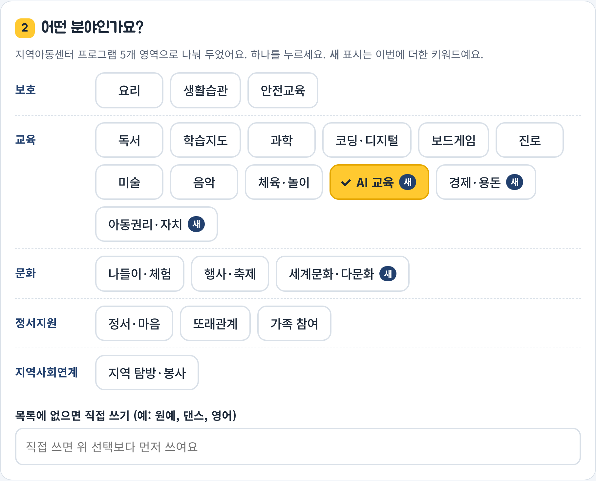
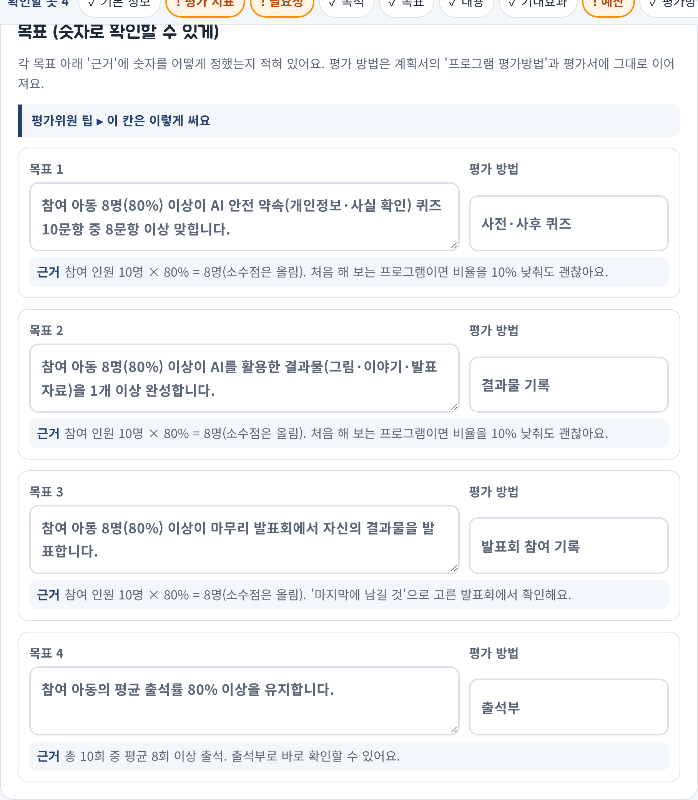
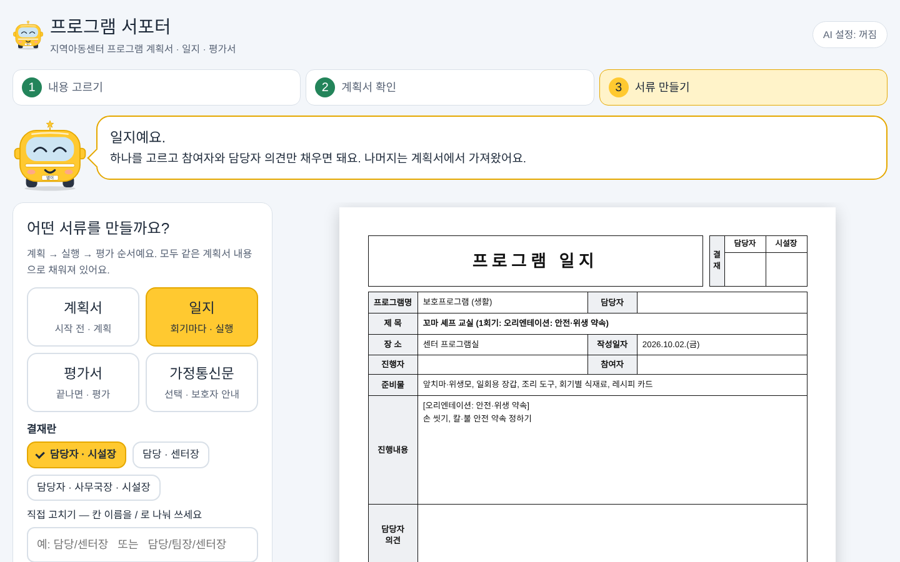
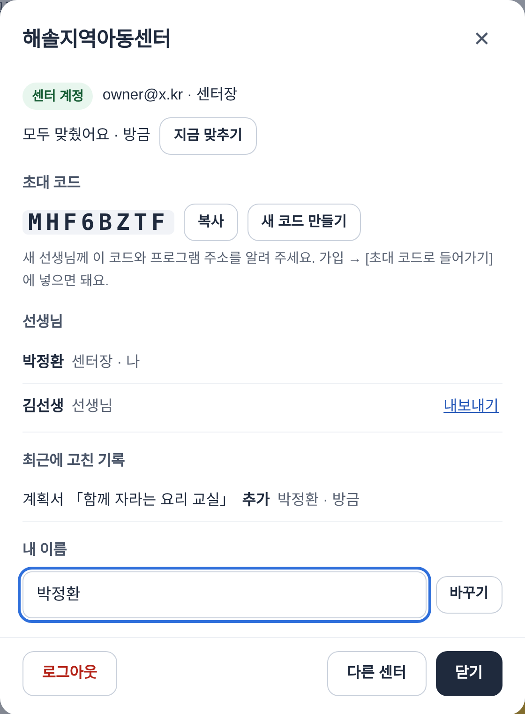

1이런 문제가 있었어요
장면 1 · 복사해서 쓰기
작년 계획서를 열어 날짜만 바꿔 써요
장면 2 · 숫자 없는 목표
"안전수칙을 숙지할 수 있다" — 몇 명이 하면 달성?
장면 3 · 세 번 옮겨 쓰기
같은 내용을 서류 3장에 또 적어요
2이렇게 해결해요
버튼으로 고르기
형태 · 분야 · 학년 · 일정 · 아동 특성
▶
규칙으로 계산
숫자 목표와 근거 · 회기 날짜 · 공휴일
▶
센터 양식 그대로
A4 인쇄 · PDF · 워드 · 한글(.hwpx)
기본 기능은 AI 없이 규칙으로 — 비용 0원, 누를 때마다 같은 결과.
3주요 기능

015대 영역 22개 키워드
분야를 누르면 필요성·목적·회기 활동이 채워져요

02숫자 목표 + 근거
"참여 아동 8명(80%) 이상이 …" 숫자를 정한 이유까지

03한 번 쓰면 서류 3종
일지·평가서로 이어지고 만족도는 자동 계산

04우리 센터 질문
같은 분야를 골라도 센터마다 다른 계획서
4이 컴퓨터에만, 또는 센터 계정으로 함께NEW
A이 컴퓨터에만 저장 (기본)
- 가입 없이 바로, 비용 0원
- 아동 정보가 밖으로 나가지 않아요
- 백업 받기 · 기록 모두 지우기
(공용 PC·담당자 바뀔 때)
B센터 계정 (선택)
- 어느 컴퓨터·휴대폰에서든 로그인하면 우리 센터 계획서가 보여요
- 센터장이 만든 초대 코드로 선생님 여러 명이 함께
- 누가 언제 고쳤는지 남고, 인터넷이 끊겨도 보관했다가 보내요
- 아동 사진은 서버에 올리지 않아요 · 로그아웃하면 그 컴퓨터에서 지워요
오른쪽 위 단추 하나로 바꿔요 · 글자 크게 · 사용 안내 · 화면 밝기 (팀 프로젝트 기능) · 자동 테스트 12종 통과

80%↓
서류 작성 시간 단축현장 피드백
1번 → 3종
한 번 입력으로 계획서·일지·평가서
80문장
눌러 넣는 문장 도우미